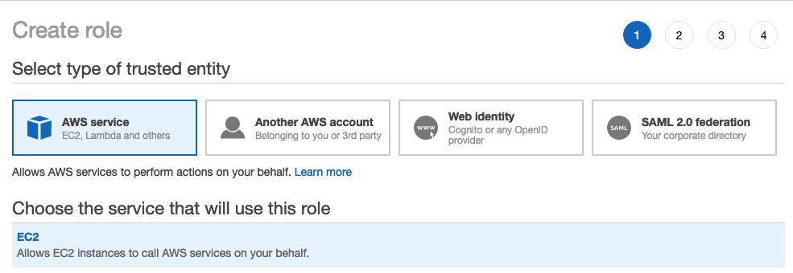
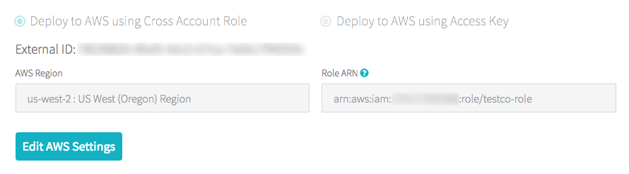
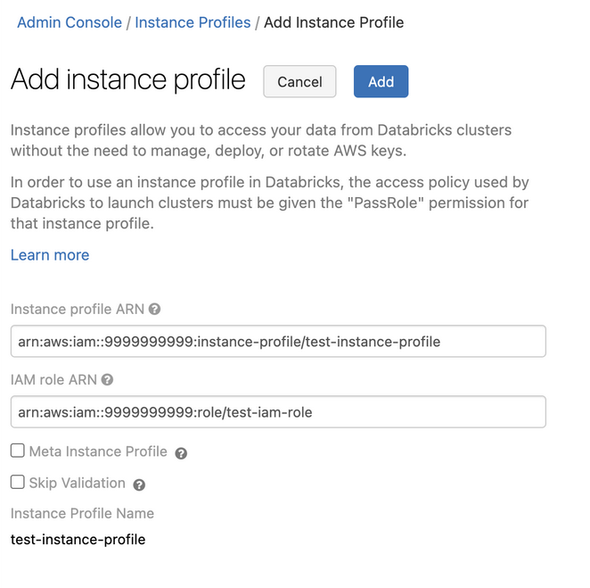
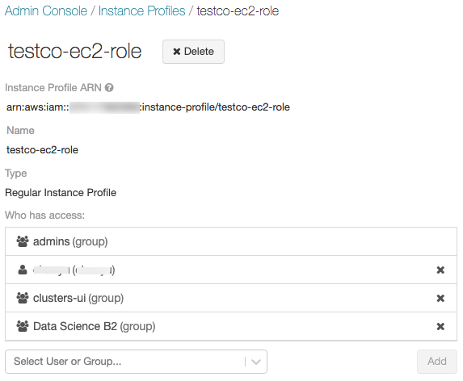
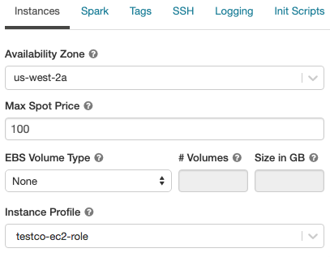

Use AWS Glue Data Catalog as a metastore (legacy)
You can configure Databricks Runtime to use the AWS Glue Data Catalog as its metastore. This can serve as a drop-in replacement for a Hive metastore.
Each AWS account owns a single catalog in an AWS region whose catalog ID is the same as the AWS account ID. Using the Glue Catalog as the metastore for Databricks can potentially enable a shared metastore across AWS services, applications, or AWS accounts.
You can configure multiple Databricks workspaces to share the same metastore.
This article shows how to securely access a Glue Data Catalog in Databricks using instance profiles.
Note
Using external metastores is a legacy data governance model. Databricks recommends that you upgrade to Unity Catalog. Unity Catalog simplifies security and governance of your data by providing a central place to administer and audit data access across multiple workspaces in your account. See What is Unity Catalog?.
Requirements
You must have AWS administrator access to IAM roles and policies in the AWS account where Databricks is deployed and in the AWS account containing the Glue Data Catalog.
If the Glue Data Catalog is in a different AWS account from where Databricks is deployed, a cross-account access policy must allow access to the catalog from the AWS account where Databricks is deployed. Note that we only support granting cross-account access using a resource policy for Glue.
Built-in mode requires Databricks Runtime 8.4 or above, or Databricks Runtime 7.3 LTS.
Configure Glue Data Catalog as the metastore
To enable Glue Catalog integration, set the Spark configuration spark.databricks.hive.metastore.glueCatalog.enabled true. This configuration is disabled by default. That is, the default is to use the Databricks hosted Hive metastore, or some other external metastore if configured.
For interactive or jobs clusters, set the configuration in the cluster configuration before cluster startup.
Important
This configuration option cannot be modified in a running cluster.
When running spark-submit jobs, set this config option either in the spark-submit parameters using --conf spark.databricks.hive.metastore.glueCatalog.enabled=true or set it in code before creating the SparkSession or SparkContext. For example:
from pyspark.sql import SparkSession
# Set the Glue confs here directly instead of using the --conf option in spark-submit
spark = SparkSession.builder. \
appName("ExamplePySparkSubmitTask"). \
config("spark.databricks.hive.metastore.glueCatalog.enabled", "true"). \
enableHiveSupport(). \
getOrCreate()
print(spark.sparkContext.getConf().get("spark.databricks.hive.metastore.glueCatalog.enabled"))
spark.sql("show databases").show()
spark.stop()
How you configure Glue Catalog access depends on whether Databricks and the Glue Catalog are in the same AWS account and region, in different accounts, or in different regions. Follow the appropriate steps in the remainder of this article:
Same AWS account and region: Follow step 1, then steps 3-5.
Cross-account: Follow steps 1-6.
Cross-region: Follow step 1, then steps 3-6.
Important
The AWS Glue Data Catalog policies define only the access permissions to the metadata. The S3 policies define the access permissions to the content itself. These steps set up a policy on the AWS Glue Data Catalog. They do not set up the related S3 bucket or object level policies. See Tutorial: Configure S3 access with an instance profile for setting up S3 permissions for Databricks.
For more information, see Restrict access to your AWS Glue Data Catalog with resource-level IAM permissions and resource-based policies.
Step 1: Create an instance profile to access a Glue Data Catalog
In the AWS console, go to the IAM service.
Click the Roles tab in the sidebar.
Click Create role.
Under Select type of trusted entity, select AWS service.
Click the EC2 service.
Under Select your use case, click EC2.
Click Next: Permissions and click Next: Review.
In the Role name field, type a role name.
Click Create role. The list of roles displays.
In the role list, click the role.
Add an inline policy to the Glue Catalog.
In the Permissions tab, click
 .
.Click the JSON tab.
Copy and paste this policy into the tab.
{ "Version": "2012-10-17", "Statement": [ { "Sid": "GrantCatalogAccessToGlue", "Effect": "Allow", "Action": [ "glue:BatchCreatePartition", "glue:BatchDeletePartition", "glue:BatchGetPartition", "glue:CreateDatabase", "glue:CreateTable", "glue:CreateUserDefinedFunction", "glue:DeleteDatabase", "glue:DeletePartition", "glue:DeleteTable", "glue:DeleteUserDefinedFunction", "glue:GetDatabase", "glue:GetDatabases", "glue:GetPartition", "glue:GetPartitions", "glue:GetTable", "glue:GetTables", "glue:GetUserDefinedFunction", "glue:GetUserDefinedFunctions", "glue:UpdateDatabase", "glue:UpdatePartition", "glue:UpdateTable", "glue:UpdateUserDefinedFunction" ], "Resource": [ "*" ] } ] }
For fine-grained configuration of allowed resources (catalog, database, table, userDefinedFunction), see Specifying AWS Glue Resource ARNs.
If the list of allowed actions in the policy above is insufficient, contact Databricks Support with the error information. The simplest workaround is to use a policy that gives full access to Glue:
{
"Version": "2012-10-17",
"Statement": [
{
"Sid": "GrantFullAccessToGlue",
"Effect": "Allow",
"Action": [
"glue:*"
],
"Resource": "*"
}
]
}
Step 2: Create a policy for the target Glue Catalog
Follow this step only if the target Glue Catalog is in a different AWS account than the one used for the Databricks deployment.
Log in to the AWS account of the target Glue Catalog and go to the Glue Console.
In Settings, paste in the following policy into the Permissions box. Set
<aws-account-id-databricks>,<iam-role-for-glue-access>from Step 1,<aws-region-target-glue-catalog>,<aws-account-id-target-glue-catalog>, accordingly.{ "Version": "2012-10-17", "Statement": [ { "Sid": "Example permission", "Effect": "Allow", "Principal": { "AWS": "arn:aws:iam::<aws-account-id-databricks>:role/<iam-role-for-glue-access>" }, "Action": [ "glue:BatchCreatePartition", "glue:BatchDeletePartition", "glue:BatchGetPartition", "glue:CreateDatabase", "glue:CreateTable", "glue:CreateUserDefinedFunction", "glue:DeleteDatabase", "glue:DeletePartition", "glue:DeleteTable", "glue:DeleteUserDefinedFunction", "glue:GetDatabase", "glue:GetDatabases", "glue:GetPartition", "glue:GetPartitions", "glue:GetTable", "glue:GetTables", "glue:GetUserDefinedFunction", "glue:GetUserDefinedFunctions", "glue:UpdateDatabase", "glue:UpdatePartition", "glue:UpdateTable", "glue:UpdateUserDefinedFunction" ], "Resource": "arn:aws:glue:<aws-region-target-glue-catalog>:<aws-account-id-target-glue-catalog>:*" } ] }
Step 3: Look up the IAM role used to create the Databricks deployment
This IAM role is the role you used when you set up the Databricks account.
The following steps are different for accounts on the E2 version of the platform than for accounts on another version of the Databricks platform All new Databricks accounts and most existing accounts are now E2.
If you are on an E2 account:
As the account owner or an acount admin, log in to the account console.
Go to Workspaces and click your workspace name.
In the Credentials box, note the role name at the end of the Role ARN.
For example, in the Role ARN
arn:aws:iam::123456789123:role/finance-prod, finance-prod is the role name.
If you are not on an E2 account:
As the account owner, log in to the account console.
Click the AWS Account tab.
Note the role name at the end of the Role ARN, here testco-role.

Step 4: Add the Glue Catalog instance profile to the EC2 policy
In the AWS console, go to the IAM service.
Click the Roles tab in the sidebar.
Click the role you noted in Step 3.
On the Permissions tab, click the policy.
Click Edit Policy.
Modify the policy to allow Databricks to pass the instance profile you created in Step 1 to the EC2 instances for the Spark clusters. Here is an example of what the new policy should look like. Replace
<iam-role-for-glue-access>with the role you created in Step 1.For accounts on the E2 version of the platform:
{ "Version": "2012-10-17", "Statement": [ { "Sid": "Stmt1403287045000", "Effect": "Allow", "Action": [ "ec2:AssociateDhcpOptions", "ec2:AssociateIamInstanceProfile", "ec2:AssociateRouteTable", "ec2:AttachInternetGateway", "ec2:AttachVolume", "ec2:AuthorizeSecurityGroupEgress", "ec2:AuthorizeSecurityGroupIngress", "ec2:CancelSpotInstanceRequests", "ec2:CreateDhcpOptions", "ec2:CreateInternetGateway", "ec2:CreatePlacementGroup", "ec2:CreateRoute", "ec2:CreateSecurityGroup", "ec2:CreateSubnet", "ec2:CreateTags", "ec2:CreateVolume", "ec2:CreateVpc", "ec2:CreateVpcPeeringConnection", "ec2:DeleteInternetGateway", "ec2:DeletePlacementGroup", "ec2:DeleteRoute", "ec2:DeleteRouteTable", "ec2:DeleteSecurityGroup", "ec2:DeleteSubnet", "ec2:DeleteTags", "ec2:DeleteVolume", "ec2:DeleteVpc", "ec2:DescribeAvailabilityZones", "ec2:DescribeIamInstanceProfileAssociations", "ec2:DescribeInstanceStatus", "ec2:DescribeInstances", "ec2:DescribePlacementGroups", "ec2:DescribePrefixLists", "ec2:DescribeReservedInstancesOfferings", "ec2:DescribeRouteTables", "ec2:DescribeSecurityGroups", "ec2:DescribeSpotInstanceRequests", "ec2:DescribeSpotPriceHistory", "ec2:DescribeSubnets", "ec2:DescribeVolumes", "ec2:DescribeVpcs", "ec2:DetachInternetGateway", "ec2:DisassociateIamInstanceProfile", "ec2:ModifyVpcAttribute", "ec2:ReplaceIamInstanceProfileAssociation", "ec2:RequestSpotInstances", "ec2:RevokeSecurityGroupEgress", "ec2:RevokeSecurityGroupIngress", "ec2:RunInstances", "ec2:TerminateInstances" ], "Resource": [ "*" ] }, { "Effect": "Allow", "Action": "iam:PassRole", "Resource": "arn:aws:iam::<aws-account-id-databricks>:role/<iam-role-for-glue-access>" } ] }
For accounts on other versions of the platform:
{ "Version": "2012-10-17", "Statement": [ { "Sid": "Stmt1403287045000", "Effect": "Allow", "Action": [ "ec2:AssociateDhcpOptions", "ec2:AssociateIamInstanceProfile", "ec2:AssociateRouteTable", "ec2:AttachInternetGateway", "ec2:AttachVolume", "ec2:AuthorizeSecurityGroupEgress", "ec2:AuthorizeSecurityGroupIngress", "ec2:CancelSpotInstanceRequests", "ec2:CreateDhcpOptions", "ec2:CreateInternetGateway", "ec2:CreateKeyPair", "ec2:CreateRoute", "ec2:CreateSecurityGroup", "ec2:CreateSubnet", "ec2:CreateTags", "ec2:CreateVolume", "ec2:CreateVpc", "ec2:CreateVpcPeeringConnection", "ec2:DeleteInternetGateway", "ec2:DeleteKeyPair", "ec2:DeleteRoute", "ec2:DeleteRouteTable", "ec2:DeleteSecurityGroup", "ec2:DeleteSubnet", "ec2:DeleteTags", "ec2:DeleteVolume", "ec2:DeleteVpc", "ec2:DescribeAvailabilityZones", "ec2:DescribeIamInstanceProfileAssociations", "ec2:DescribeInstanceStatus", "ec2:DescribeInstances", "ec2:DescribePrefixLists", "ec2:DescribeReservedInstancesOfferings", "ec2:DescribeRouteTables", "ec2:DescribeSecurityGroups", "ec2:DescribeSpotInstanceRequests", "ec2:DescribeSpotPriceHistory", "ec2:DescribeSubnets", "ec2:DescribeVolumes", "ec2:DescribeVpcs", "ec2:DetachInternetGateway", "ec2:DisassociateIamInstanceProfile", "ec2:ModifyVpcAttribute", "ec2:ReplaceIamInstanceProfileAssociation", "ec2:RequestSpotInstances", "ec2:RevokeSecurityGroupEgress", "ec2:RevokeSecurityGroupIngress", "ec2:RunInstances", "ec2:TerminateInstances" ], "Resource": [ "*" ] }, { "Effect": "Allow", "Action": "iam:PassRole", "Resource": "arn:aws:iam::<aws-account-id-databricks>:role/<iam-role-for-glue-access>" } ] }
Click Review policy.
Click Save changes.
Step 5: Add the Glue Catalog instance profile to a Databricks workspace
Go to the admin settings page.
Click the Instance Profiles tab.
Click the Add Instance Profile button. A dialog appears.
Paste in the Instance Profile ARN from Step 1.
Databricks validates that this Instance Profile ARN is both syntactically and semantically correct. To validate semantic correctness, Databricks does a dry run by launching a cluster with this instance profile. Any failure in this dry run produces a validation error in the UI.
Note
The validation of the instance profile can fail if it contains the tag-enforcement policy, preventing you from adding a legitimate instance profile. If the validation fails and you still want to add the instance profile to Databricks, use the Instance Profiles API and specify
skip_validation.Click Add.
Optionally specify the users who can launch clusters with the instance profile.

Step 6: Launch a cluster with the Glue Catalog instance profile
Create a cluster.
Click the Instances tab on the cluster creation page.
In the Instance Profiles drop-down list, select the instance profile.
Verify that you can access the Glue Catalog, using the following command in a notebook:
show databases;
If the command succeeds, this Databricks Runtime cluster is configured to use Glue. Depending on your AWS account and Glue region, you might need to perform two additional steps:
If the AWS account of the Databricks deployment and the AWS account of the Glue Data Catalog are different, extra cross-account setup is needed.
Set
spark.hadoop.hive.metastore.glue.catalogid <aws-account-id-for-glue-catalog>in Spark configuration.If the target Glue Catalog is in a different region than the Databricks deployment, also specify
spark.hadoop.aws.region <aws-region-for-glue-catalog>.
Tip
A reminder that spark.databricks.hive.metastore.glueCatalog.enabled true is a required configuration for connection to AWS Glue.
Spark includes built-in support for Hive, but whether this is used depends on the Databricks Runtime version.
Isolation mode: Built-in support for Hive is disabled. Libraries for Hive 1.2.1.spark2 are loaded from
/databricks/glue/. In Databricks Runtime 8.3, isolation mode is enabled and can’t be disabled. In Databricks Runtime 7.3 LTS and Databricks Runtime 8.4 and above, isolation mode is the default, but can be disabled.Built-in mode: Built-in support for Hive is enabled, and the Hive version depends upon the Spark version. In Databricks Runtime 7.3 LTS and Databricks Runtime 8.4 and above, you can enable built-in mode by setting
spark.databricks.hive.metastore.glueCatalog.isolation.enabled falseon the cluster.
To enable credential passthrough, set
spark.databricks.passthrough.enabled true. This requires Databricks Runtime 7.3 LTS or Databricks Runtime 8.4 or above. On Databricks Runtime 7.3 LTS and Databricks Runtime 8.4 and above, this setting also automatically enables built-in mode.
Limitations
Using AWS Glue Data Catalog as the metastore in Databricks has the potential for higher latency than the default Hive metastore. For more information, see Experiencing higher latency with Glue Catalog than Databricks Hive metastore in the Troubleshooting section.
The default database is created with a location set to a URI using the
dbfs:(Databricks File System) scheme. This location is not accessible from AWS applications outside Databricks such as AWS EMR or AWS Athena. As a workaround, use theLOCATIONclause to specify a bucket location, such ass3://mybucket/, when you callCREATE TABLE. Alternatively, create tables within a database other than the default database and set theLOCATIONof that database to an S3 location.You cannot dynamically switch between Glue Catalog and a Hive metastore. You must to restart the cluster for new Spark configurations to take effect.
Credential passthrough is supported only in Databricks Runtime 8.4 and above.
The following features are not supported:
Cross-system interactions where you share the same metadata catalog or actual table data across multiple systems.
Important
When you specify a schema location, you must include a trailing slash in the URI, such as s3://mybucket/ rather than s3://mybucket. Omitting the slash can result in exceptions.
Troubleshooting
In this section:
Higher latency with Glue Catalog than Databricks Hive metastore
Using Glue Data Catalog as the external metastore may incur higher latency than the default Databricks hosted Hive metastore. Databricks recommends enabling client-side caching in the Glue Catalog client. The following sections show how to configure client-side caching for tables and databases. You can configure client-side caching for clusters and SQL warehouses.
Note
Client-side caching is not available for the listing table operation
getTables.The time-to-live (TTL) configuration is a tradeoff between effectiveness of the cache and the tolerable staleness of the metadata. Choose a TTL value that makes sense for the specific scenario.
For more details, see Enabling client side caching for Glue Catalog in the AWS documentation.
No instance profile attached to the Databricks Runtime cluster
If no instance profile is attached to the Databricks Runtime cluster, then the following exception occurs when you run any operation that requires metastore lookup:
org.apache.spark.sql.AnalysisException: java.lang.RuntimeException: com.amazonaws.SdkClientException: Unable to load AWS credentials from any provider in the chain: [EnvironmentVariableCredentialsProvider: Unable to load AWS credentials from environment variables (AWS_ACCESS_KEY_ID (or AWS_ACCESS_KEY) and AWS_SECRET_KEY (or AWS_SECRET_ACCESS_KEY)), SystemPropertiesCredentialsProvider: Unable to load AWS credentials from Java system properties (aws.accessKeyId and aws.secretKey), com.amazonaws.auth.profile.ProfileCredentialsProvider@2245a35d: profile file cannot be null, com.amazonaws.auth.EC2ContainerCredentialsProviderWrapper@52be6b57: The requested metadata is not found at https://169.254.169.254/latest/meta-data/iam/security-credentials/];
Attach an instance profile that has sufficient permissions to access the desired Glue Catalog.
Insufficient Glue Catalog permission
When the instance profile doesn’t grant a permission that is required to perform a metastore operation, an exception like the following occurs:
org.apache.spark.sql.AnalysisException: java.lang.RuntimeException: MetaException(message:Unable to verify existence of default database: com.amazonaws.services.glue.model.AccessDeniedException: User: arn:aws:sts::<aws-account-id>:assumed-role/<role-id>/... is not authorized to perform: glue:GetDatabase on resource: arn:aws:glue:<aws-region-for-glue-catalog>:<aws-account-id-for-glue-catalog>:catalog (Service: AWSGlue; Status Code: 400; Error Code: AccessDeniedException; Request ID: <request-id>));
Check that the attached instance profile specifies sufficient permissions. For example, in the previous exception, add glue:GetDatabase to the instance profile.
Permission error on glue:GetDatabase when running SQL directly on files
In Databricks Runtime versions below 8.0, when running a SQL query directly on files, for example,
select * from parquet.`path-to-data`
you may encounter an error like the following:
Error in SQL statement: AnalysisException ... is not authorized to perform: glue:GetDatabase on resource: <glue-account>:database/parquet
This happens when the IAM policy does not grant the permission to perform glue:GetDatabase on the resource database/<datasource-format>, where <datasource-format> is a data source format such as parquet or delta.
Add permissions to the IAM policy to allow glue:GetDatabase on database/<datasource-format>.
There is a limitation in the implementation of the Spark SQL analyzer, where it attempts to resolve a relation against the catalog before falling back to attempting resolve against registered data source for SQL on file. The fallback only works when the initial attempt to resolve against the catalog returns without an exception.
Even though the resource database/<datasource-format> might not exist, for the fallback to SQL query on file to run successfully, the IAM policy for Glue Catalog must allow performing the glue:GetDatabase action on it.
In Databricks Runtime 8.0 and above, this issue is handled automatically and this workaround is no longer needed.
Mismatched Glue Catalog ID
By default, a Databricks cluster tries to connect to the Glue Catalog in the same AWS account as the one used for the Databricks deployment.
If the target Glue Catalog is in a different AWS account or region from the Databricks deployment, and the spark.hadoop.hive.metastore.glue.catalogid Spark configuration is not set, the cluster will connect to the Glue Catalog in the AWS account of the Databricks deployment instead of the target catalog.
If the spark.hadoop.hive.metastore.glue.catalogid configuration is set, but the configurations in Step 2 were not properly done, any access to the metastore causes an exception like the following:
org.apache.spark.sql.AnalysisException: java.lang.RuntimeException: MetaException(message:Unable to verify existence of default database: com.amazonaws.services.glue.model.AccessDeniedException: User:
arn:aws:sts::<aws-account-id>:assumed-role/<role-id>/... is not authorized to perform: glue:GetDatabase on resource: arn:aws:glue:<aws-region-for-glue-catalog>:<aws-account-id-for-glue-catalog>:catalog (Service: AWSGlue; Status Code: 400; Error Code: AccessDeniedException; Request ID: <request-id>));
Verify that the configuration aligns with steps 2 and 6 in this article.
Athena Catalog conflicts with Glue Catalog
If you created tables using Amazon Athena or Amazon Redshift Spectrum before August 14, 2017, databases and tables are stored in an Athena-managed catalog, which is separate from the AWS Glue Data Catalog. To integrate Databricks Runtime with these tables, you must upgrade to the AWS Glue Data Catalog. Otherwise, Databricks Runtime fails to connect to the Glue Catalog or fails to create and access some databases, and the exception message may be cryptic.
For example, if the “default” database exists in the Athena Catalog but not in the Glue Catalog, an exception will occur with message like:
AWSCatalogMetastoreClient: Unable to verify existence of default database:
com.amazonaws.services.glue.model.AccessDeniedException: Please migrate your Catalog to enable access to this database (Service: AWSGlue; Status Code: 400; Error Code: AccessDeniedException; Request ID: <request-id>)
Follow the instructions in Upgrading to the AWS Glue Data Catalog in the Amazon Athena User Guide.
Creating a table in a database with empty LOCATION
Databases in the Glue Catalog may be created from various sources. Databases created by Databricks Runtime have a non-empty LOCATION field by default. Databases created in the Glue Console directly or imported from other sources, could have an empty LOCATION field.
When Databricks Runtime tries to create a table in a database with an empty LOCATION field, an exception occurs like the following: like:
IllegalArgumentException: Can not create a Path from an empty string
Create the database in the Glue Catalog with a valid non-empty path in the LOCATION field, specify the LOCATION when creating the table in SQL, or specify option("path", <some-valid-path>) in the DataFrame API.
When you create a database in the AWS Glue Console, only the name is required; both the “Description” and “Location” are marked as optional. However, Hive metastore operations depend on “Location”, so you must specify it for databases that will be used in Databricks Runtime.
Accessing tables and views created in other system
Accessing tables and views created by other systems, such as AWS Athena or Presto, may or may not work in Databricks Runtime or Spark, and these operations not supported. They may fail with cryptic error messages. For example, accessing a view created by Athena, Databricks Runtime, or Spark may throw an exception like:
IllegalArgumentException: Can not create a Path from an empty string
This exception occurs because Athena and Presto store view metadata in a format that is different from what Databricks Runtime and Spark expect.